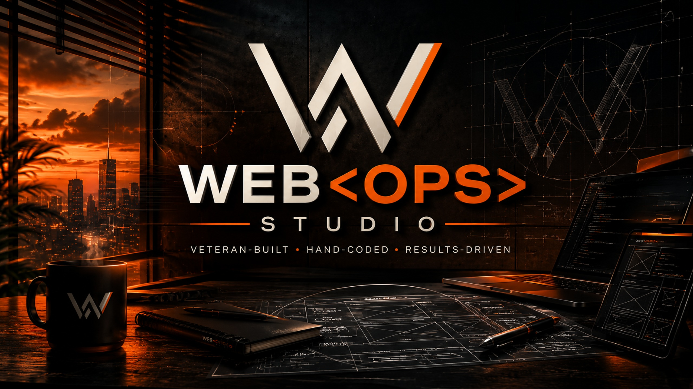

No templates. No page builders. No shortcuts. Every line written from scratch — built to load fast, look sharp, and hold up for years.
Craig Baumann is a U.S. Army veteran and self-taught front-end developer based in Minnesota. WebOps Studio exists because most small businesses deserve better than a $30-a-month drag-and-drop site that breaks when a plugin updates.
Every project is written in plain HTML, CSS, and vanilla JavaScript. No React. No Bootstrap. No bloat. Just clean, fast, maintainable code you actually own.
Read the Full StoryUnderstand the business, the goal, and what success actually looks like for this client.
Plan the structure, page map, and technical requirements before writing a single line.
Hand-coded from scratch. HTML, CSS, vanilla JS. No templates, no shortcuts.
Tested across mobile, tablet, and desktop. Deployed clean. You own the code.
Craig went above and beyond. He didn't just build us a website — he brought our mission to life. We get compliments on it constantly.
Guardian 4 Heroes TeamWhether you need a landing page or a full site build, the first conversation is always free.